Placing a part in the assembly model
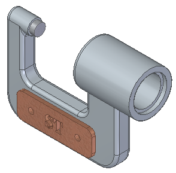
In the next few steps, place a name plate onto the micrometer frame.
Learn how to find and select parts using Parts Library.
Learn how to position parts using assembly relationships and the Assemble command bar.
To position parts in an assembly, a variety of assembly relationships are applied.
For the name plate part, apply a mate relationship and two axial align relationships to fully position the name plate with respect to the frame.
Solid Edge provides a tool called FlashFit to apply each of these relationships, without having to specify the exact relationship type to use.
In the next few steps, use FlashFit to fully position the name plate as shown above.
Both the PathFinder and Parts Library panes will be used to select and position parts in the assembly.
To make it easier to see the contents of the Parts Library and the PathFinder panes, maximize their size.
Choose Home tab→Components group→Insert Component command.

The Parts Library displays. It stays open as long as the Insert Component command is active.
Press Esc to exit the command.
In the instructions that follow, work with information in the Parts Library pane. Use whichever method of displaying the pane is more comfortable.
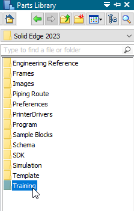
If the working folder on the Parts Library tab is not the Solid Edge Training folder, do the following:
On the Parts Library tab, click the arrow (1) on the right side of the Look In control and then browse to the Solid Edge Training folder.
The default location of the Solid Edge Training folder is:
C:\Program Files\Siemens\Solid Edge 2023\Training
However, the system administrator may have chosen a different location.
On the Parts Library tab, click the Views button , and then select the Details option.
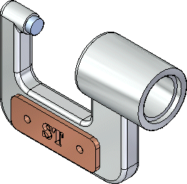
In the next few steps, you place and position the nameplate part as shown.
For the remainder of this tutorial, if a part is positioned incorrectly or you are confused about the steps while positioning a part, do the following:
Press Esc to end the current command.
Use the Home tab→Select command to select the incorrectly placed part.

Press Delete on the keyboard to delete the part.
Back up to the step where part placement begins, and try again.
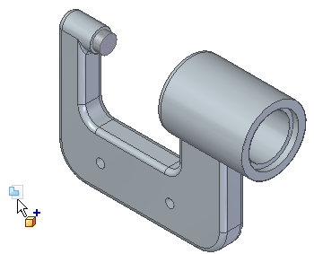
Display the Parts Library.
In the file list area on the Parts Library tab, drag the file NamePlate1.par into the assembly window, and then release the mouse button at the approximate position shown above.
The nameplate is placed in the assembly, as shown below.
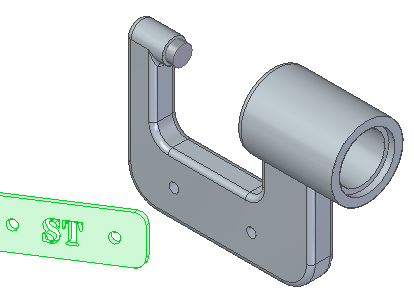
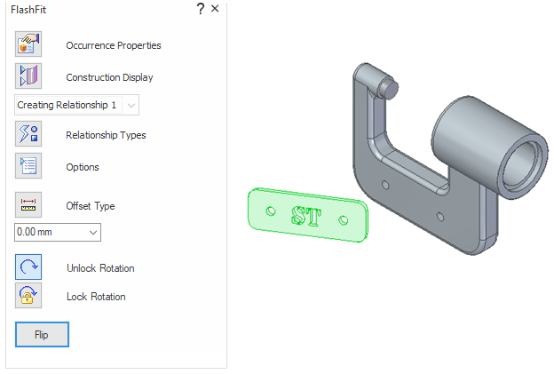
When placing the name plate part into the assembly, the command bar displays. It is shown horizontally here, but it may display vertically, depending on the user interface theme selected. In either case, the command bar displays the same information and options.
-
Beginning at the top, examine the command bar, and notice the options:
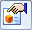
Occurrence Properties-
Displays the Occurrence Properties dialog box. Use this dialog box to define whether the part is displayed in higher level assemblies, counted in parts lists, and so forth.
- Construction Display
-
Displays or hides elements for the part being placed, such as reference planes, sketches, and construction surfaces. This can make it easier to position certain types of parts.
- Relationship List
-
Displays the relationships used to position a part. When editing the position of a part after placement, select the relationship to redefine from the list.
- Relationship Types
-
Use the Relationship Types option to select which assembly relationship option to use for positioning a part.
 Options
Options-
Displays the Options dialog box. Use this dialog box to set the FlashFit options, Reduced Steps option, and so forth.
- Offset Type
-
Use the Offset Type to define a fixed numeric offset value based on the relationship being defined.
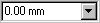
Offset Value-
Use the Offset Value box to enter the fixed offset value.
- Unlock Rotation
-
The Unlock Rotation option unlocks the rotational orientation of the part. This option is useful when the rotational orientation of the part is not important, such as for a bolt being positioned in a hole.
- Lock Rotation
-
The Lock Rotation option locks the rotational orientation of the part. This option is useful when the rotational orientation of the part is not important, such as for a bolt being positioned in a hole.
- Flip
-
The Flip button repositions a part to the opposite side of a face, changing a mate relationship to a planar align relationship.
On the Assemble command bar, click the Options button. 
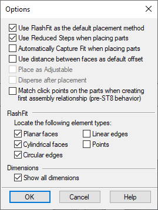
On the Options dialog box, ensure that the options match the illustration.
Notice that the FlashFit option specifies what types of faces FlashFit recognizes.
Click OK to dismiss the dialog box.
For this tutorial and most part positioning scenarios, the FlashFit settings shown work well.
When selecting faces for the first assembly relationship, Solid Edge repositions the part being placed based on the approximate positions on the faces selected on the placement part and the part in the assembly.
Use FlashFit to apply the first mate relationship.
-
On the Assemble command bar, in the Relationship Types list, ensure that the FlashFit option
 is active.
is active.For this part, the default offset value of zero, where the parts touch, is the appropriate option.
A mate relationship positions a part by orienting two planar faces so that they face each other. Mated faces can touch or be offset from each other.
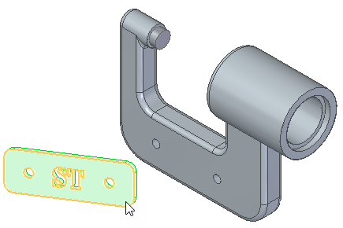
Hover over the face shown highlighted in the top illustration, and notice that the cursor image changes to indicate that multiple selections are available. Also notice that the cursor image indicates which button to click to display the QuickPick list.
Right-click to display the QuickPick list.
Move the cursor over the different entries in QuickPick, and notice that different elements of the model highlight.
Use QuickPick to highlight the planar face shown in the bottom illustration, and then left-click to select it.
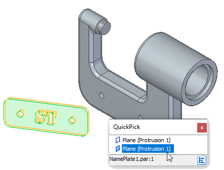
Use QuickPick to select the exact element wanted, the first time, without having to reject unwanted elements.
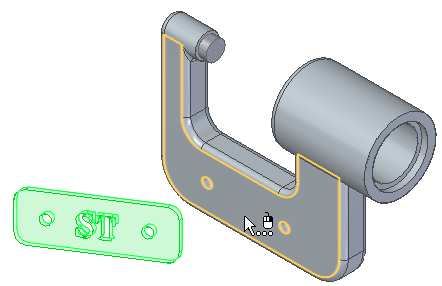
If the QuickPick cursor displays, but the proper face highlights, bypass QuickPick by simply clicking the face.
-
Select the front face of the frame part, as shown in the illustration.
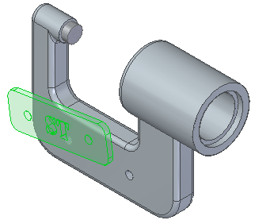
The mate relationship repositions the name plate in the assembly.
Because only one assembly relationship is applied, the position of the name plate might be different than the illustration.
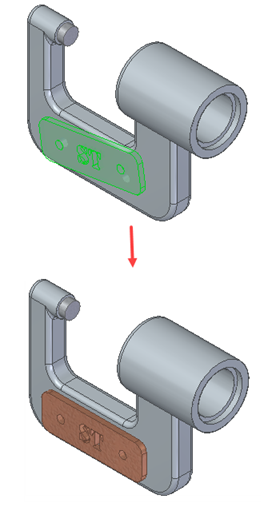
In the next few steps, use FlashFit to apply axial align relationships between the bolt holes on the name plate with the bolt holes on the frame.
You want to align the cylindrical axis on the name plate with the cylindrical axis on the frame.
Use QuickPick to select the axis on the name plate, as shown in the illustration.
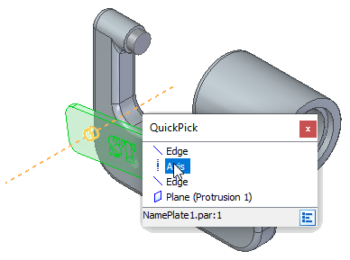
Select the cylindrical axis on the frame part as shown in the illustration.
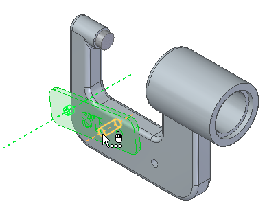
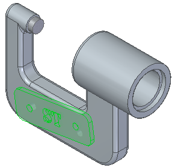
Although the name plate appears correctly positioned on the frame, no relationship prohibits the name plate from pivoting about the cylindrical axes just aligned.
In the next steps, apply another axial align relationship to fully position the name plate.
To prevent the name plate from rotating out of position, apply a second axial alignment relationship.
Select the cylindrical axis on the name plate, as shown in the illustration.
Depending on where the cursor is positioned, QuickPick may be needed to select the proper axis.
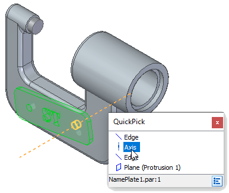
Select the cylindrical axis on the frame as shown in the illustration.
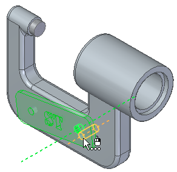
The name plate part is now fully positioned in the assembly.
Notice that the Assemble command bar is dismissed.
In the top pane of PathFinder, click the NamePlate.par:1 entry.
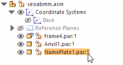
Notice that the applied relationships display in the bottom pane of PathFinder.
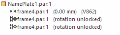
On the File menu, click Save As→Save As.
On the Save As dialog box, in the File name box, save the assembly to a new name or location so that other users can complete this tutorial using the original assembly file.
In the Save As dialog box, click Save.
This completes the adding a part to the assembly and positioning it with relationships portion of the tutorial.